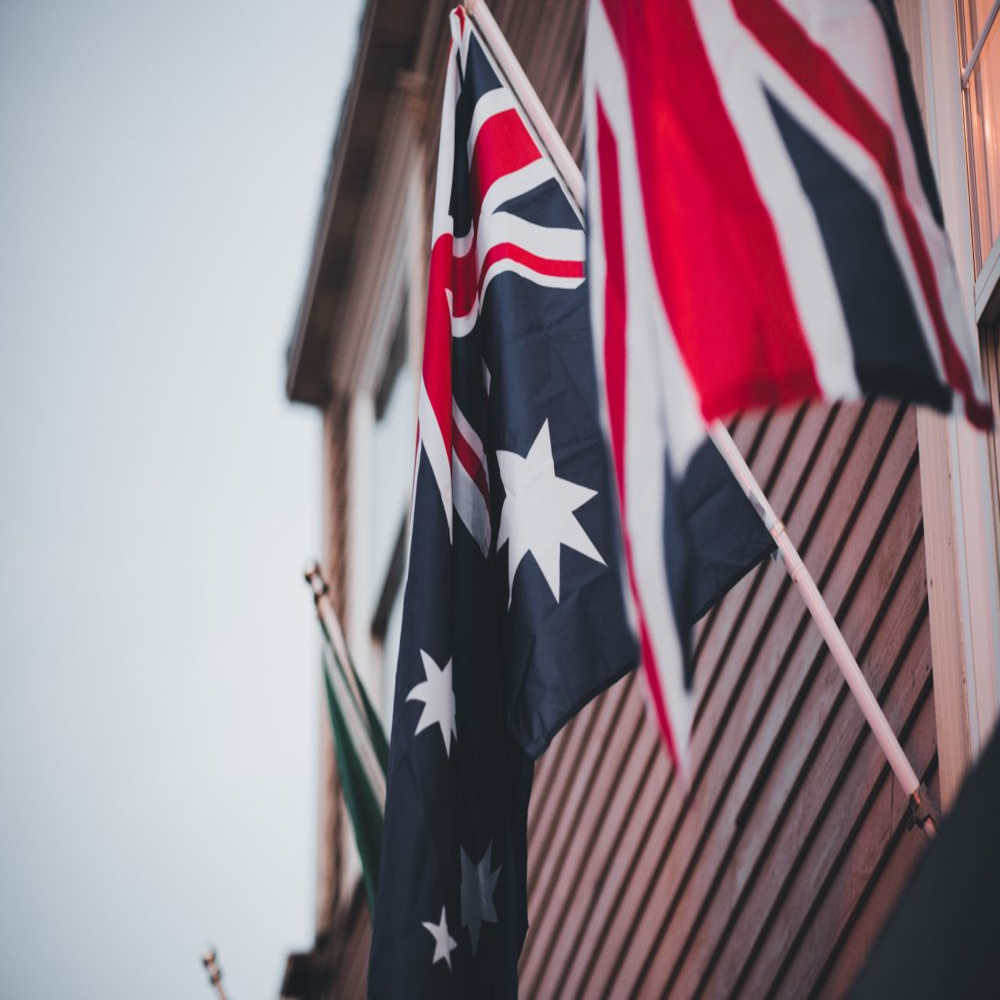

Veja os motivos do porquê eu gostar tanto desse país como um todo.
A Nova Zelândia é um país localizado na Oceania, formado por duas ilhas principais e diversas ilhas menores. Antes da chegada dos europeus, o território era habitado pelos povos maoris, que até hoje preservam suas tradições e cultura. Os primeiros colonizadores europeus chegaram no século XVII, e o país passou a fazer parte do Império Britânico. Atualmente, a Nova Zelândia é reconhecida por sua qualidade de vida, segurança e belas paisagens naturais.
A Nova Zelândia possui alguns dos cenários naturais mais impressionantes do mundo. Entre os principais pontos turísticos estão o Parque Nacional de Fiordland, o Lago Tekapo, as Cavernas de Waitomo e o Monte Cook, a montanha mais alta do país. A cidade de Queenstown é famosa pelos esportes de aventura, enquanto Auckland é conhecida por sua vida urbana, praias e belas paisagens. O país também ficou mundialmente famoso por servir de cenário para os filmes da The Lord of the Rings.
A culinária da Nova Zelândia combina influências da cultura maori e britânica. Entre os pratos mais conhecidos estão o hangi, uma refeição tradicional preparada lentamente em um forno subterrâneo, além de cordeiro assado, frutos do mar e peixes frescos. O país também é famoso pela produção de queijos, vinhos e pela sobremesa Pavlova, muito popular em toda a região.
A Nova Zelândia possui uma população de ovelhas muito maior do que a de pessoas, sendo um dos maiores produtores de lã do mundo. O país é conhecido por suas rígidas leis de preservação ambiental e por abrigar o kiwi, uma ave que não voa e se tornou símbolo nacional. Além disso, foi o primeiro país do mundo a conceder às mulheres o direito de votar, em 1893, tornando-se um marco na história da democracia.
"You can never cross the ocean until you have the courage to lose sight of the shore."- William Faulkner
Retorne ao ponto inicial do site: Página Inicial